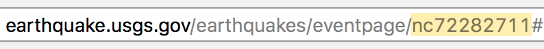

Earthquake Response App
This web application creates a map and summary to help collect and
digest information used in talking points and scientific response.
Instructions
- Enter the Mainshock Event id. You can find an
Event id in the URL of an Event page for a specific earthquake. For
example: 
- Optional: tweak the parameters for Aftershocks /
Historical Seismicity. (If empty, values will be set
automatically based on mainshock’s magnitude.)
- Click the ‘Map’ or ‘Summary’ tab (above).
Earthquake data is from ComCat:
ComCat Documentation - Data Availability.